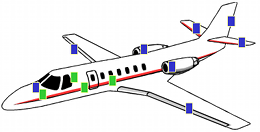
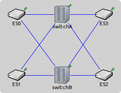
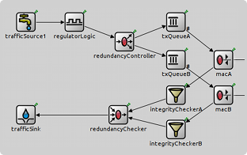

In one of our projects, we helped a client build a simulation model for aircraft on-board data networks based on the Avionics Full-Duplex Switched Ethernet (AFDX) standard. The model would be used for various purposes including performance evaluation and reliability analysis. The base of the model was the OMNEST performance modeling library. The library allowed us to create the model quickly, and left room for gradual refinement and extension in various directions.
Introduction. AFDX provides networking services for internal aircraft communication. To reduce costs, it is based on the Ethernet standard and deploys a switched Ethernet network topology to deliver reliable and redundant data transmission services for aircraft end systems (ES). Determining the reliability and performance of complex AFDX networks with hundreds or thousands of ESs is not an easy task. OMNEST was used to create a simulation library that provides configurable ESs and switches that can be used as building blocks for large AFDX networks. Models can be used for system reliability and redundancy analysis by inserting link and component failures and can be invaluable when determining the packet delays and jitters at various points in the system. A network configuration is usually determined by the number of ESs and the applications running on them plus the physical and virtual connections among them. (AFDX uses preconfigured virtual circuits to deliver data between ESs.)
Considerations. As a first step in our modeling process, we investigated what model components are readily available for OMNEST. Because AFDX uses Ethernet as the base technology and uses higher layer protocols like TCP when transmitting data between applications, we considered {% include extlink.html key="inet" text="INET Framework" %}. INET contains both Ethernet modules and higher layer protocols like IP, TCP, and UDP. We concluded using INET Framework would give too detailed a model and would deliver answers to questions we are not really interested in (like how the upper level protocols like TCP behave in an AFDX network). Ethernet in AFDX is also so simple (full-duplex without contention or auto-configuration, etc.) that we did not need the complex implementation found in INET.

Our next take was the Performance Modeling Library delivered with OMNEST as a "sample simulation". This library is a complete implementation of several simple blocks (with source code) that can be used to build up queuing networks. Queues, servers, classifiers, switches, and resource management blocks were all readily available. It was exactly at the level of detail we needed, but we were concerned about what would happen if we needed some functionality that could not be expressed using the pre-built blocks. Some simulation software forces you to express all model behavior using predefined blocks, which may turn into a "graphical programming" nightmare if there is an "impedance mismatch" between the functionality to be implemented and the vehicles the simulation tool provides. However, in OMNEST, these problems can be solved by customizing the library blocks (by C++ inheritance or directly changing the source code) or replacing a block with an alternative implementation while keeping its external interface.

Creating the model. First, we created a rough implementation using the pre-built blocks. After that, we started refining the blocks. We added AFDX specific data (virtual link and partition IDs, etc.) to the source packet generators, then we refined our Ethernet MAC module which was originally just a stock Server block. At first, we also had a Switch implementation that had hard-coded virtual link routing information but later changed this to read the link information from a configuration file.
Conclusion. We found that using the queuing library was very rewarding in our simulation model, as it allowed us to build a model at the right level of abstraction. The top-down design method in OMNEST made it possible to refine the model gradually, without having to contend with unnecessary complexity or suffer performance overhead from an excessively detailed model. It was useful to have complete control over the behavior of the model, by being able to modify or replace the initial building blocks.